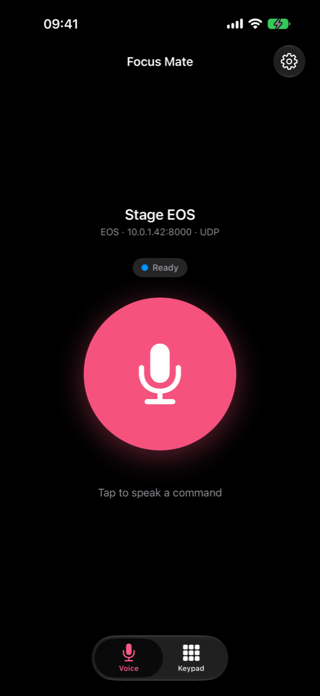
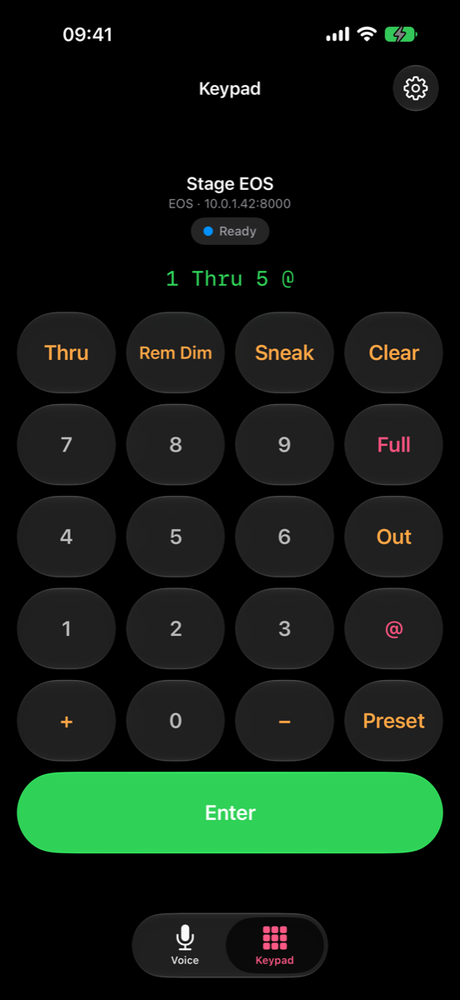
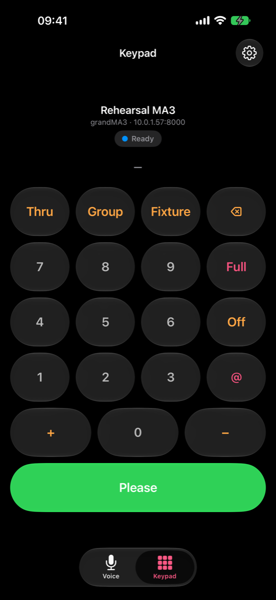

New in Version 2
Focus Mate has been rebuilt from the ground up with a new iPhone app, new Watch app, and a new OSC engine.
-
grandMA3 Beta
Now supporting grandMA3 with a new dictionary of commands, bringing Focus Mate to a more diverse range of shows.
-
Direct Watch control
The Watch app sends OSC straight to the console over Wi-Fi without relaying through your iPhone, improving response times.
-
Multiple consoles
Save every desk you work on, in the main house, the studio, and the concert hall, and switch between them in a tap. Your list syncs to the Watch automatically.
-
Improved command parser
A new command parser which understands both individual keystrokes and full command lines like Channel 1 Thru 5 Full Please.
-
TCP
Added support for TCP connections, including automatic version detection. Works by default on port 3037 for Third Party OSC on EOS, allowing it to work even when OSC RX is turned off.
-
Native app
A native Swift app built for iOS 26+, with improved performance, light and dark modes, and a small footprint.
Just say it
You can dictate full sentences, like you would to an assistant, and Focus Mate will do its best to execute what you ask. Say group 32 at 50 or channels 1 through 5 by themselves, and it goes to the desk as if you'd typed it.
Anything not recognised is skipped rather than guessed at, so a stray "erm" in the middle of a command won't mean you have to start again.

Or type it
A keypad remote is also provided for when longer commands are faster to type than to speak. The keys adapt to the console you're using, to keep the experience consistent.
Above the keys, the command line mirrors what the desk receives, so you can check a longer command is correct before you hit enter.

Console adaptability
Pick your console and the layout follows it. On EOS you get Rem Dim, Sneak and Preset; on Hog those keys become / and Clear; on grandMA3 they become Group and Fixture, Out becomes Off and Enter becomes Please.

What you can say
Supported voice commands include (with more coming in the near future):
Selectors
plus, and, minus, without, through, group, address
Record targets
cue, colour, focus, beam, intensity, preset, macro, sub
Others
at, full, out, home, sneak, by themselves (rem dim), alone (rem dim), enter
On grandMA3 Beta
channel, fixture, group, thru, at, full, off, highlight, home, preset, cue, sequence, macro, please
Numbers can be spoken or dictated as digits — "channel fifteen" and "channel one five" both produce the same result.
Setup
Setup is done like any other OSC remote. The console must be on the same network as your iPhone or Watch. Then add it in the app's settings: a name, the desk type, its IP address and port, and you're good to go.
ETC EOS & Nomad
For UDP, enable OSC in Setup → Device Settings → Network → UDP String & OSC UDP and Setup → System Settings → Show Control → OSC → OSC RX. Choose an OSC UDP RX Port (usually between 8000 and 9999), and match the settings in the app.
For TCP, turn on OSC in Setup → Device Settings → Network → TCP OSC & Third Party OSC
You can find the console's IP address in About.
Hog 4
Enable OSC in the console's network settings and enter its IP address and port.
grandMA3 Beta
Turn on OSC in Menu → In & Out → OSC, enable Input, and set both Receive and Receive Command to Yes. Note the port and the prefix (gma3, for example), and match the settings in the app. UDP is preferred with grandMA3.
MA3 support is in beta until I have had a chance to test it more thoroughly.
Get Focus Mate
On the App Store, for iPhone and Apple Watch.